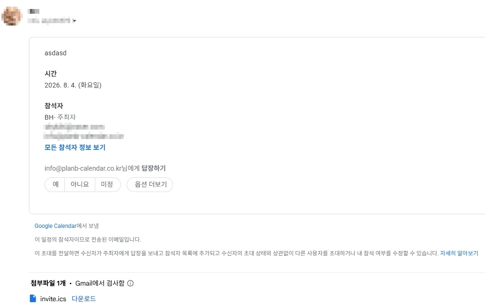

네이버 캘린더를 PC(데스크탑)에서 쓰는 3가지 방법
- 네이버 캘린더는 공식 PC 데스크탑 앱이 없음.
- PC에서 쓰는 방법 3가지 — ① 브라우저, ② 모바일 앱, ③ CalDAV로 데스크탑 캘린더 앱에 연동(추천).
- ③은 네이버 아이디 + 앱 비밀번호로 연결하며, 앱과 네이버가 양방향으로 동기화됨.
- PlanB Calendar를 쓰면 네이버뿐 아니라 구글·MS·애플·노션까지 한 화면에 모아 볼 수 있음.
네이버 캘린더에 PC용 데스크탑 앱이 있나?
없음. 네이버 캘린더는 모바일 앱은 있지만 Windows·Mac용 공식 데스크탑 앱은 제공하지 않음. 그래서 컴퓨터로 네이버 일정을 보려면 매번 브라우저를 열거나, 다른 방법을 써야 함. 아래 세 가지를 비교했음.
방법 1 — 브라우저로 열기
가장 간단한 방법은 calendar.naver.com에 접속하는 것. 설치가 필요 없고 항상 최신 상태라는 게 장점. 다만 다음 단점이 있음.
- 탭을 하나 더 띄워 둬야 하고, 브라우저를 닫으면 사라짐
- 알림이 브라우저·OS 설정에 묶여 잘 안 뜨는 경우가 많음
- 구글·회사 캘린더를 같이 보려면 탭을 여러 개 열어 오가야 함
방법 2 — 모바일 앱으로 쓰기
폰에서는 네이버 앱으로 편하게 관리할 수 있지만, PC 작업 중엔 흐름이 끊김. 컴퓨터로 일정을 바로 확인·추가하려는 목적엔 맞지 않음.
방법 3 — 데스크탑 캘린더 앱에 연동하기 (추천)
가장 편한 방법은 CalDAV를 지원하는 데스크탑 캘린더 앱에 네이버 계정을 연결하는 것. 네이버 캘린더는 CalDAV 표준을 지원하므로, 네이버 아이디 + 앱 비밀번호로 연결하면 브라우저 없이 PC에서 네이버 일정을 바로 볼 수 있음. 앱에서 일정을 만들거나 고치면 네이버 원본에도 그대로 반영되는 양방향이 핵심.

PlanB Calendar(플랜비 캘린더)가 이 방식으로 네이버·네이버웍스 캘린더를 연동함. 게다가 네이버 하나만이 아니라 구글·Microsoft 365·애플·노션까지 여러 계정을 한 화면에 겹쳐서 볼 수 있음. 회사 계정과 개인 계정을 색으로 구분해 한눈에 보는 식.

일정에 참석자를 추가하면 초대 메일이 발송되고, 상대는 메일에서 바로 참석 여부를 응답할 수 있음. 알림도 브라우저가 아니라 PC 알림으로 뜸.

세 가지 방법 비교
| 방법 | PC에서 바로 보기 | 여러 계정 통합 | 양방향 편집 |
|---|---|---|---|
| 브라우저 | △ (탭 필요) | ✕ | ○ |
| 모바일 앱 | ✕ | △ | ○ |
| 데스크탑 앱(PlanB) | ○ | ○ | ○ |
정리하면, 가끔 확인만 하면 브라우저로 충분하지만 PC에서 네이버 일정을 자주 보고 편집하거나 다른 계정과 같이 보고 싶다면 데스크탑 캘린더 앱으로 연동하는 게 가장 편함.
자주 묻는 질문
네이버는 공식 데스크탑 앱이 없지만, CalDAV를 지원하는 데스크탑 캘린더 앱(PlanB Calendar 등)에 네이버 아이디와 앱 비밀번호로 연결하면 브라우저 없이 PC에서 양방향으로 쓸 수 있음.
반영됨. CalDAV 양방향 동기화라 앱에서 만들거나 고친 일정이 네이버 원본에 그대로 반영되고, 네이버에서 바꾼 일정도 앱에 반영됨.
가능함. PlanB Calendar는 네이버·네이버웍스·구글·Microsoft 365·애플·노션 캘린더를 한 화면에 색으로 구분해 함께 표시함.